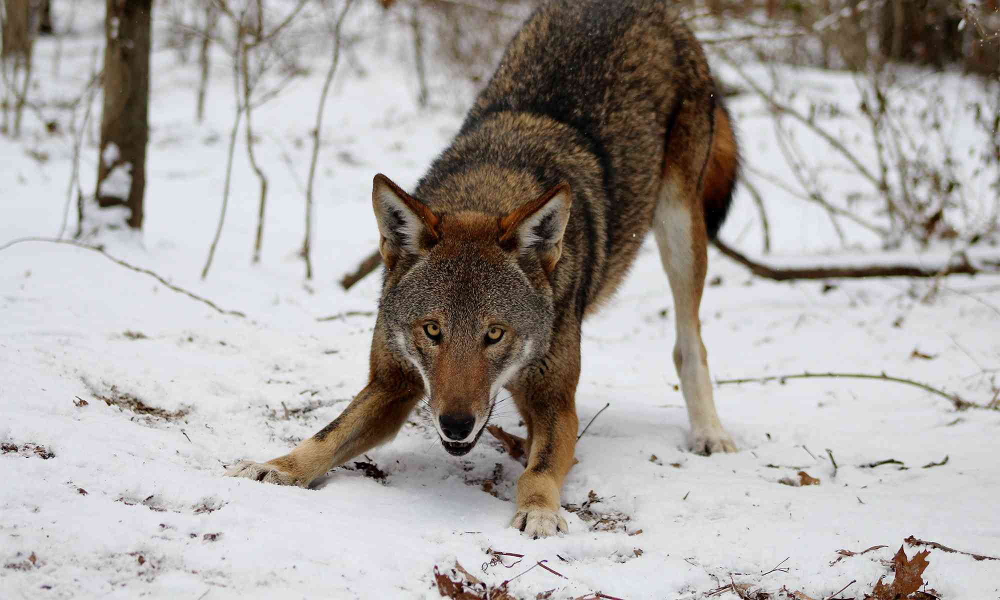

|  |
The wolf (Canis lupus[a]), also known as the gray wolf or grey wolf, is a large canine native to Eurasia and North America. More than thirty subspecies of Canis lupus have been recognized, and gray wolves, as popularly understood, comprise non-domestic/feral subspecies. The wolf is the largest extant member of the family Canidae. It is also distinguished from other Canis species by its less pointed ears and muzzle, as well as a shorter torso and a longer tail. The wolf is nonetheless related closely enough to smaller Canis species, such as the coyote and the golden jackal, to produce fertile hybrids with them. The banded fur of a wolf is usually mottled white, brown, gray, and black, although subspecies in the arctic region may be nearly all white.
Of all members of the genus Canis, the wolf is most specialized for cooperative game hunting as demonstrated by its physical adaptations to tackling large prey, its more social nature, and its highly advanced expressive behaviour. It travels in nuclear families consisting of a mated pair accompanied by their offspring. |